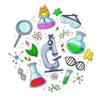
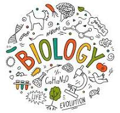

Learning about biology
information of biology
Biology is a branch of science that deals with living organisms and their vital processes
Biology encompasses diverse fields, including botany, conservation, ecology, evolution,
genetics, marine biology, medicine, microbiology, molecular biology, physiology,
and zoology


the images that you see are about biology
As a field of science, biology helps us understand the living worldand the ways its many species (including humans) function, evolve, and interact. Advances in medicine, agriculture, biotechnology, and many other areas of biology have brought improvements in the quality of life.
why biology is imporant to learn
From plants and animals to genes and evolution, this is the study of all living organisms and how they live and die. Biology is a natural science which covers how living organisms interact with each other and within that contains many different and unique fields for you to find your specialism.
Why biology is the best
It is a subject that has shaped our understanding of the world around us, as well as ourselves. With biology, we can understand the surrounding environment, the earth and plants that give us life, and the animals great and small that share the planet with us.
can biology give us any benefit
Not only does it provide a strong foundation in the natural sciences, but it also prepares students for various careers in fields such as healthcare, research, education, and environmental conservation. One of the main benefits of a biology degree is the breadth of knowledge that students gain